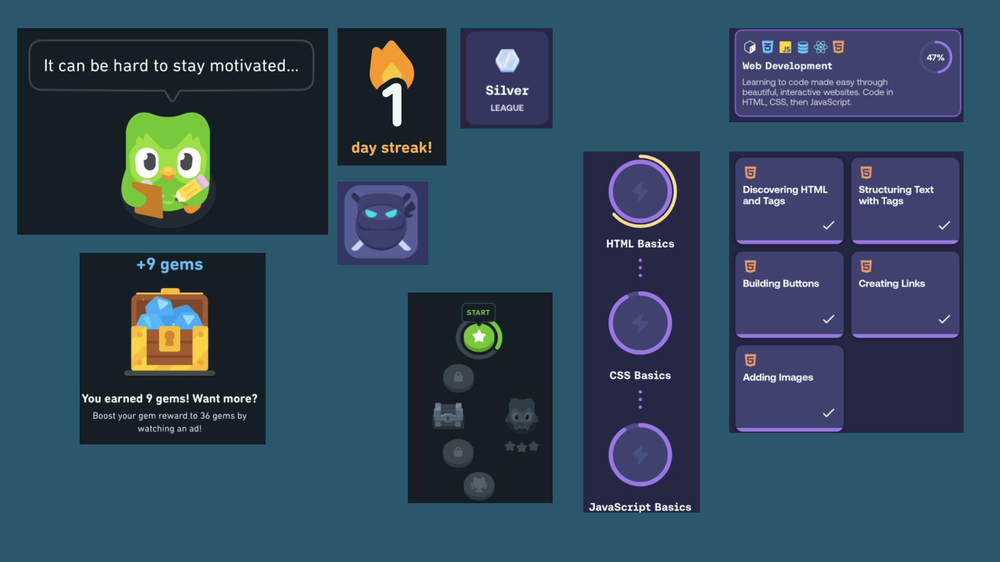
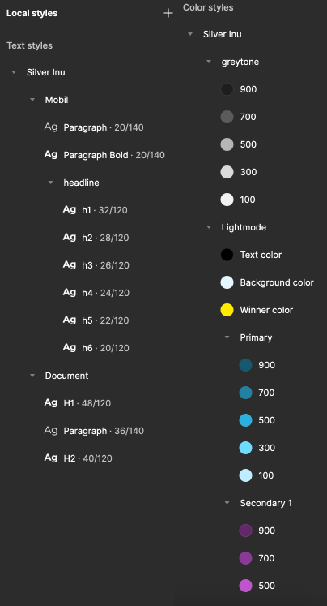
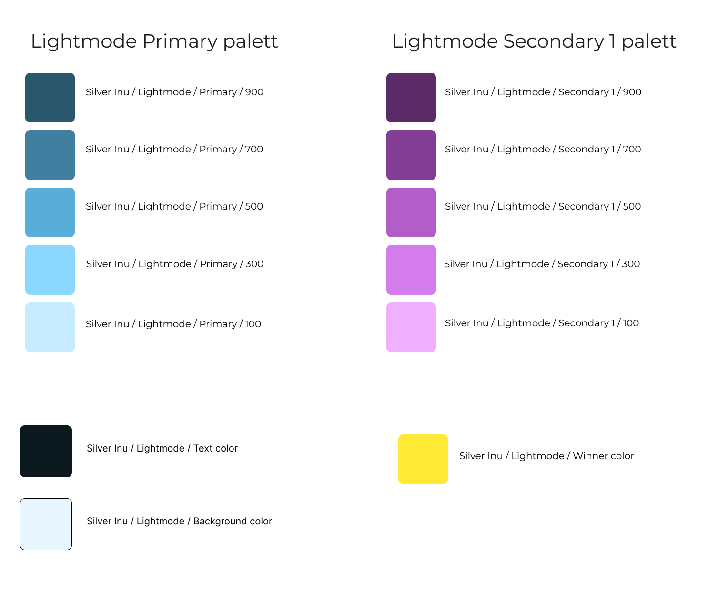
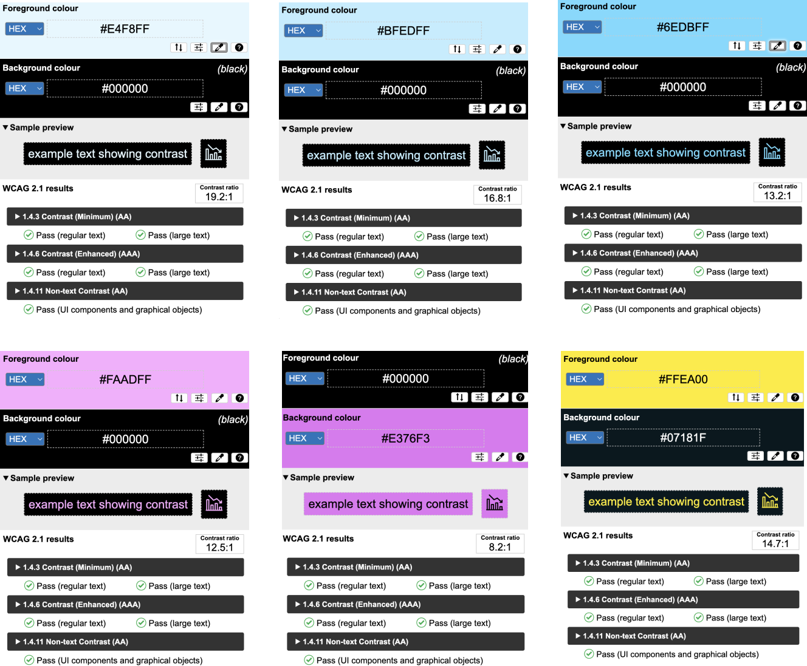
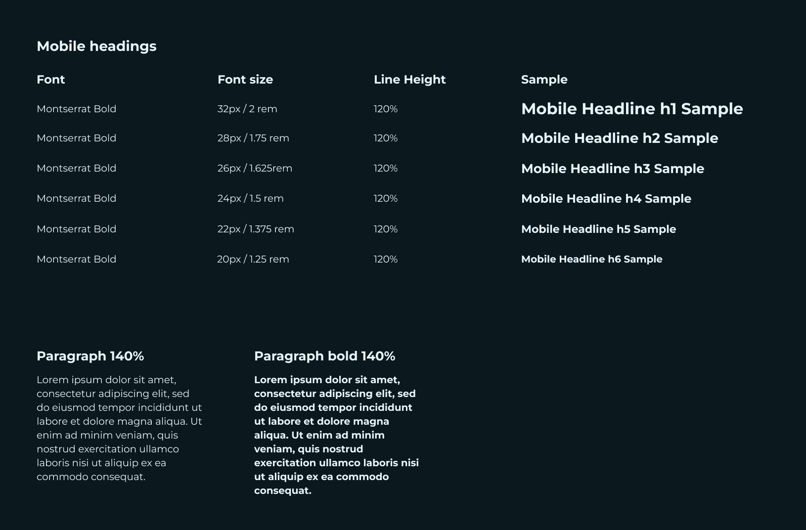
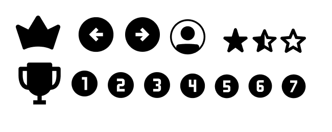
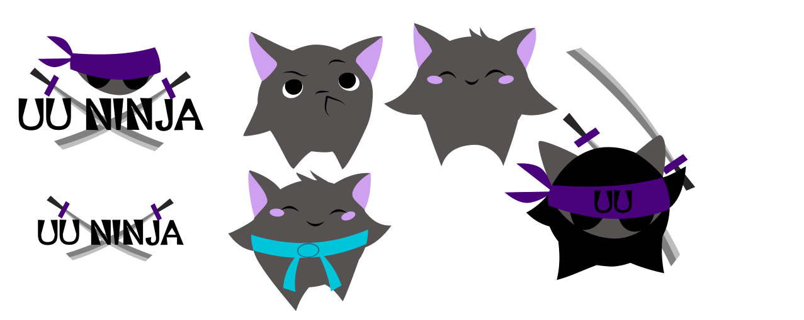
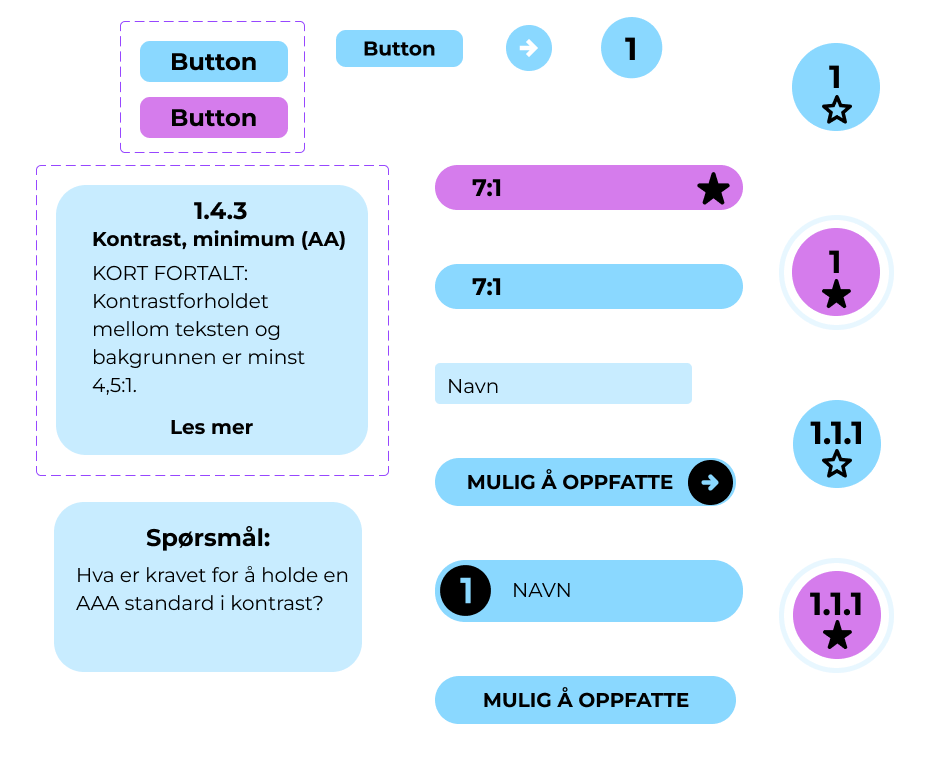

Oppgave
I dette prosjektet ønsker jeg å ta deg med på en reise fra å ikke vite stort om universell utforming til å bli den beste i klassen!
Konkurer med klassekamerater eller kollegaer dine om den gjeve tittelen UU Ninja!
Tidsbruk
2 uker
Verktøy som ble brukt:
Prosess
I dette prosjektet går jeg ut fra metoden Design thinking. Da må jeg først forstå hva som er porblemet. Når jeg har funnet problemet utforsker jeg hvordan det skal løses, for så å lage en prototype. Deretter tester jeg ut løsningen, forandrer på den etter innsikten jeg får fra testene, for så å implementere løsningen i produktet.
Innsikt
Undersøkelser
Hva er WCAG og hvem er det som styrer dette i Norge? WCAG er ……… og er viktig for at alle skal få tilgang til samme muligheter digitalt uansett funksjonsevne. Uutilsynet er en del av Digdir(digitaliseringsdirektoratet), og er et fagorgan for utvikling av regelverk og universell utforming i nasjonal og internasjonal IKT. Uutilsynet har i oppgave følge opp nettløsninger og selvbetjeningsautomater i forhold til universell utforming og WCAG. I Norge er det Digdir som har ansvaret for å hjelpe regjeringen med digitaliseringen av samfunnet, hovedsakelig den offentlige sektoren, men også næringslivet generelt. De har ansvaret for flere sentrale offentlige tjenester som Nav, Altinn osv. Målet til Digdir er å sørge for at utviklingen i teknologi blir utviklet i den beste retningen for å tjene felleskapet.
Målgruppe
For å finne målgruppe tenkte jeg på hvem som trenger å lære seg WCAG og kom frem til at målgruppen jeg skal jobbe i mot i denne oppgaven er studenter som må lære seg å lage universelt utformede nettløsninger i sine fremtidige jobber.
Utfordringer
Nettsidene til WCAG er ikke veldig enkle å navigere og stoffet er tungt å lese. Nettsiden til Uutilsynet er bedre å navigere i, og finne det man leter etter, men det er fortsatt tørt og kjedelig å lese for å lære om reglene.
Problemstilling
Ut fra utfordringene ble problemstillingen min: Hvordan kan man motivere til læring av WCAG og universell utforming hos studenter som skal bygge fremtidige nettløsninger.
Intervju
Det ble gjennomført intervjuer av studenter som alle syns WCAG og universell utforming er vanskelig å lære seg. Dette fordi det er et ganske omfattende og «tørt» stoff, men de fleste var enige i at det er viktig å kunne tilby noe alle kan bruke uansett funksjonsnivå.
Personas
Jeg gjorde intervjuer og basert på disse fikk jeg disse personasene.


Inspirasjon
Inspirasjonen for løsningen min tok jeg fra Duolingo(.......) og Mimo(.......), begge er læringsplattformer som har morsomme og lærerike måter å lære bort på.
Duolingo er en av de beste appene for å lære språk. Den har små øvelser og du kan konkurrere med andre. det er lett å se progresjon og du blir belønnet for progresjonene man har. den har også en søt maskot og fine farger. Farger og søte maskoter liker vi!
Mimo er en app hvor man lærer HTML, CSS, Javascript og andre kodespråk. her er det mye av de samme prinsippene som i Duolingo men har også muligheter for å øve seg på de forskjellige tingene man lærer gjennom prosjekter i forskjellig vansklighetsgrad.
Konsept
Før prototyping lagde jeg meg et tankekart for å få ned alt jeg kom på om hvordan du kan gjøre det spennende å lære om WCAG for studenter i målgruppen min.

Jeg tegnet også ideer til layout på papir før jeg lagde en lowfi prototype i Figma.
Lowfi prototype og brukertesting
1.verson Lofi
Jeg gjorde brukertester på to versjoner av lowfi.

Brukertest
Tilbakemeldingene jeg fikk fra de første brukertestene var blant annet at det var mye tekst og veldig overveldende med både logg inn, registrering og liga på samme side. Det var også litt uklart hva en liga var. Ellers likte de oppdelingen av oppgavene og de fleste fant liga topplisten greit. de ville også ha litt mer tekst om de forskjellige suksesskriteriene før man tok quizen.
Forandringer jeg gjorde

2.verson Lofi

Brukertest
I denne omgangen av tester fikk jeg flere tilbakemeldinger. Stjernen øverst i høyre hjørnet og score var litt forvirrende på de første sidene, derfor fjernet jeg disse i high fidelity prototypen. Det trengtes en informasjon om at det er en test/Quiz du begynner på når de 4 prinsippene kommer, da det var litt uklart hva man gikk inn i. Har derfor lagt inn en tittel som sier mer om hva som kommer. Fikk også tilbakemelding om at oppgavene trengte mer enn bare farge for å markere om en oppgave er gjort eller ikke. Har derfor markert oppgavene med stjerner som blir utfylt når de blir gjennomført, og i tillegg en ring rundt suksesskriteriene man har gjort.
Designsystem
Styles
Farger
Kontrast
Typografi
Ikoner og logoer
 Komponenter
Highfi Prototype og brukertesting
Prototype
I high fidelity prototypen implementerte jeg forandringene fra tilbakemeldingene på de forrige testene.

 Link til prototype
Link til prototype
Brukertest
Ved brukertesting av Highfi fikk jeg tilbakemeldinger som:

Videre utvikling
Ved videre utvikling ville jeg ha delt opp teksten mer og laget en knapp nederst på «les mer» boksen. Videre lagt inn en overskrift mellom «les mer» felt og oppgaver, fordi det ikke er tydelig nok at disse er knapper du skal trykke på for å komme til en oppgave. Jeg hadde også utviklet belønnings systemet, og hvordan ligaen skal fungere.
Hva lærte jeg
I denne oppgaven lærte jeg hvor viktig brukertesting er. Det er brukerne vi designer for, så det er utrolig verdifullt å få tilbakemeldinger fra dem.
Universell utforming er også et stort felt som jeg synes er veldig intressant. Det er ikke bare for de som ikke ser eller hører. Det er feks også for de som ikke har konsentrasjon nok eller blir fort distraherte. Det er mange funksjonsnedsettelser både midlertidige og permanente som må tas hensyn til i denne prosessen. Og disse variasjonene ser man fortere ved brukertesting.
Neste prosjekt!